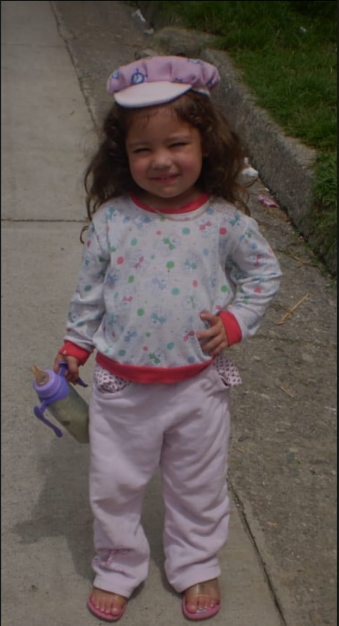
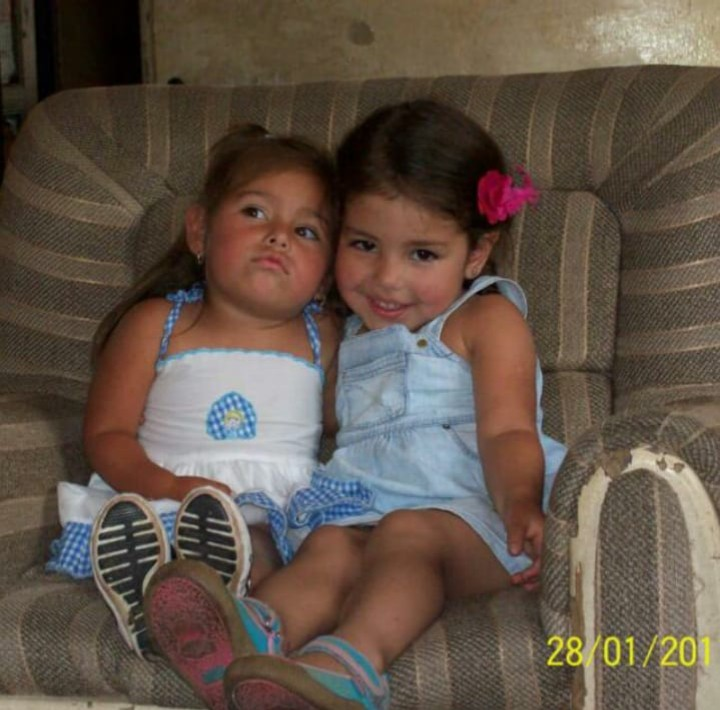
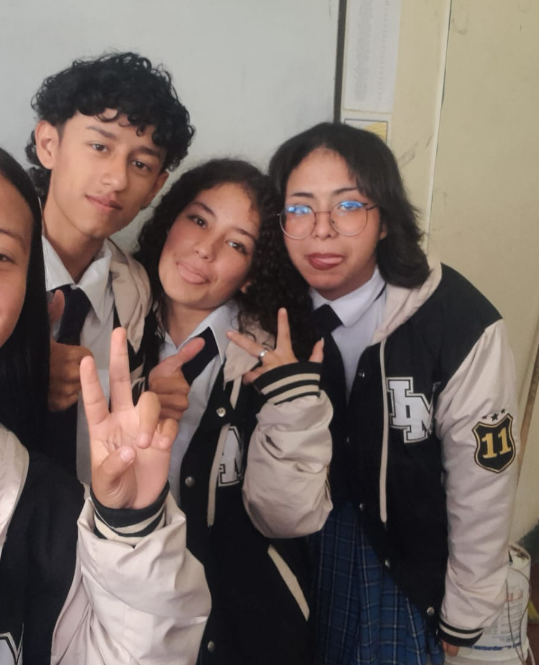

Me llamo Angie Verónica, aunque yo prefiero Verónica (por alguna razón), tengo 19 años y nací el 17 de abríl de 2007 en Manizales, Colombia. Actualmente vivo con mis padres y mi hermana menor.
Si tuviera que definirme de forma rápida, diría que soy una persona genuinamente feliz, artistica, soñadora, curiosa y emocional.
Crecí en Manizales junto a toda familia, mis abuelos, mis tios y tias, mis primas, mi hermana y mis padres. De mi niñez recuerdo que siempre fui muy feliz con todo, era soñadora, alegre, creativa y muy timida.

Entré a Kinder a la edad de 5 años y siempre sobre salí por mi comportamiento y notas, pero era muy insegura en todo lo demás.
Crecí en un lugar muy alegre, siempre me apoyaron en todas mis desciones, y gracias a ese ambiente positivo, desde muy chico tuve la libertad de explorar lo que me gustaba.
r, pero si tengo que hablar de una persona fundamental en mi vida, esa es mi hermana, que es solo un año menor que yo. Más que una hermana, ella es mi mejor amiga y mi cómplice en todo. Al llevarnos tan poca diferencia de edad, prácticamente crecimos como si fuéramos gemelos; hemos pasado juntos por las mismas etapas, los mismos cambios y las mismas locuras desde que éramos niños.

La adolescencia fue una etapa de puros cambios, descubrimientos y un montón de energía. Para mí, esos años no fueron de rebeldía sin sentido, sino el momento exacto en el que empecé a definir quién quería ser fuera del colegio y de la rutina. Fue la época en la que mis tardes se llenaron por completo de música, pasando de la guitarra a la disciplina del violín y luego a la fuerza del trombón. Entre tareas, amigos y horas de práctica, descubrí que el arte no era solo un pasatiempo, sino mi forma de expresarme y de procesar todo lo que pasaba a mi alrededor. Aunque a veces era caótico intentar encajar todo lo que me gustaba en el día a día, la adolescencia me enseñó a tomar mis propias decisiones y a darme cuenta de que mi felicidad dependía de mantenerme fiel a mis pasiones.
Llevar adelante los estudios fue un verdadero reto, sobre todo porque la carga académica era muchísima y me exigía estar concentrada al máximo. Casi nunca tenía tiempo libre; mis días eran una carrera constante y agotadora entre las clases, las tareas y salir corriendo a los ensayos. Sin embargo, en medio de toda esa locura y el ritmo pesado de la escuela, conocí a personas increíbles como Arana y Jhoan. Compartir el día a día con ellos hizo que todo fuera mucho más ligero y divertido; se convirtieron en un apoyo enorme dentro y fuera de las aulas. Aunque a veces terminaba exhausta haciendo malabares entre mis amigos, los exámenes y el tiempo que le dedicaba a la guitarra, al violín y al trombón, al final del día valía la pena. No estaba dispuesta a renunciar a lo que me hacía feliz, y tener a gente tan genial a mi lado hizo que esa etapa fuera inolvidable.

Dentro de este camino, uno de los momentos más importantes y difíciles para mí fue cuando decidí dejar de tocar el trombón. Aunque me gustaba muchísimo y disfrutaba un montón de su energía y de los ensayos, llegó un punto en el que tuve que poner los pies en la tierra. Me di cuenta de que el tiempo no me alcanzaba para todo y que debía priorizar mi futuro y enfocarme en cosas más importantes en ese momento, como mis estudios en el SENA. Tomar esa decisión me dolió porque significaba soltar una parte de mi rutina musical, pero me enseñó a madurar, a asumir responsabilidades y a entender que a veces hay que hacer sacrificios para poder avanzar y construir la vida que quiero.
Una de mis bandas favoritas se llama Margarita Siempre Viva
Una canción que me gusta mucho
Me cuesta tanto olvidarte - MecanoLasagna
Gatos
Pintar